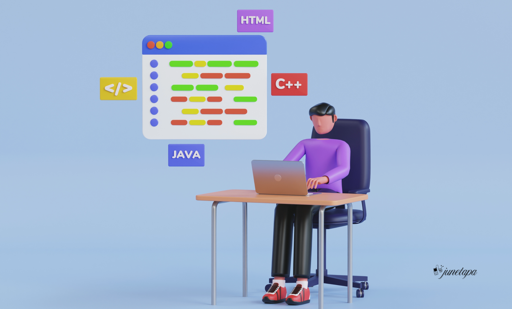
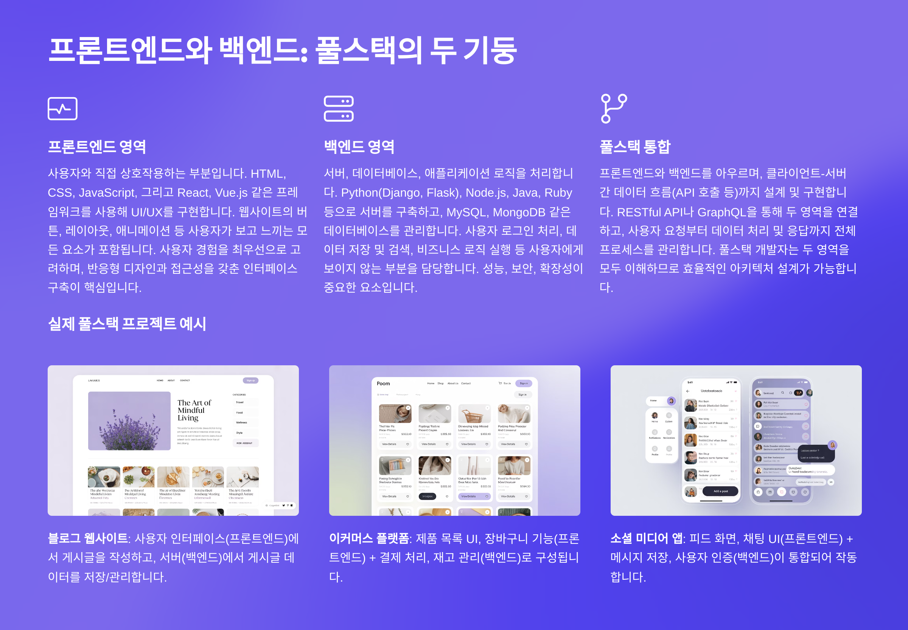
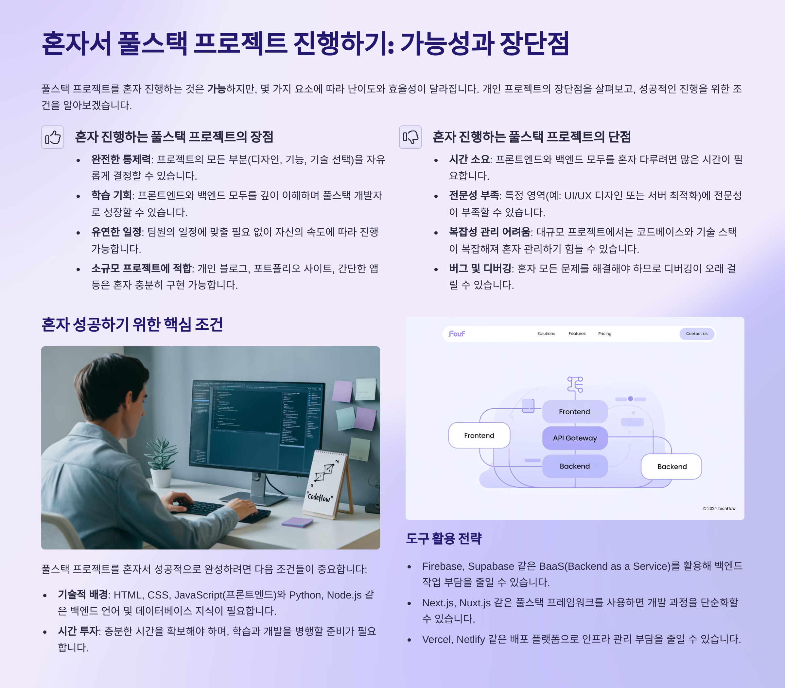
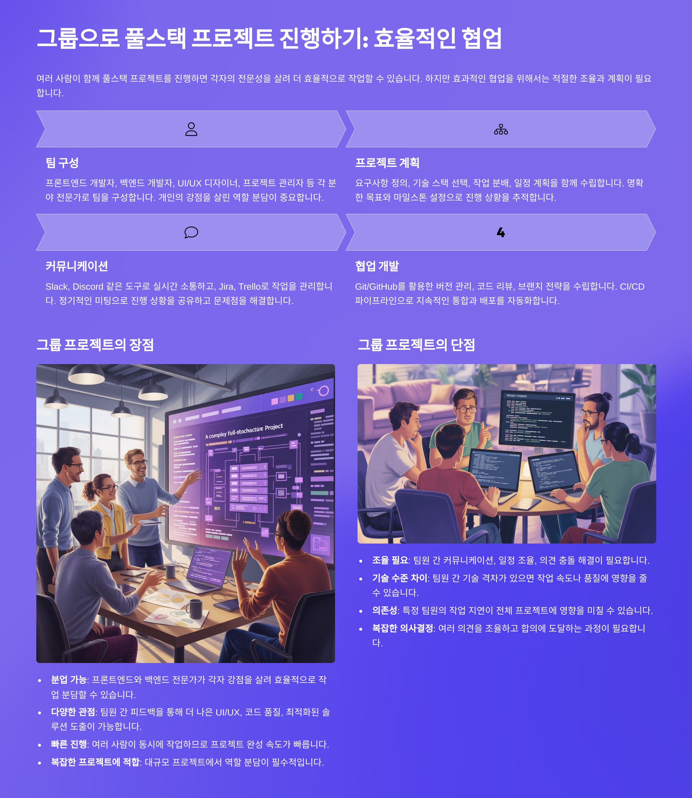
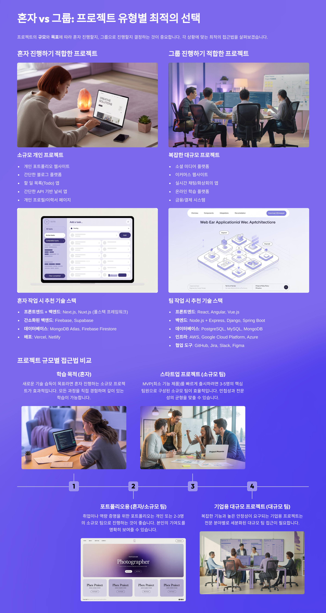
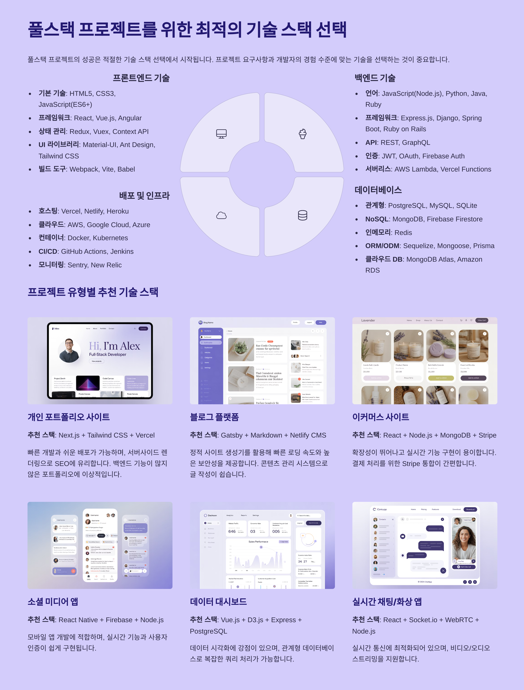
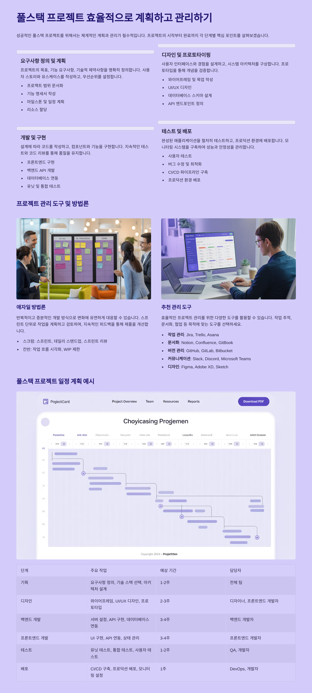
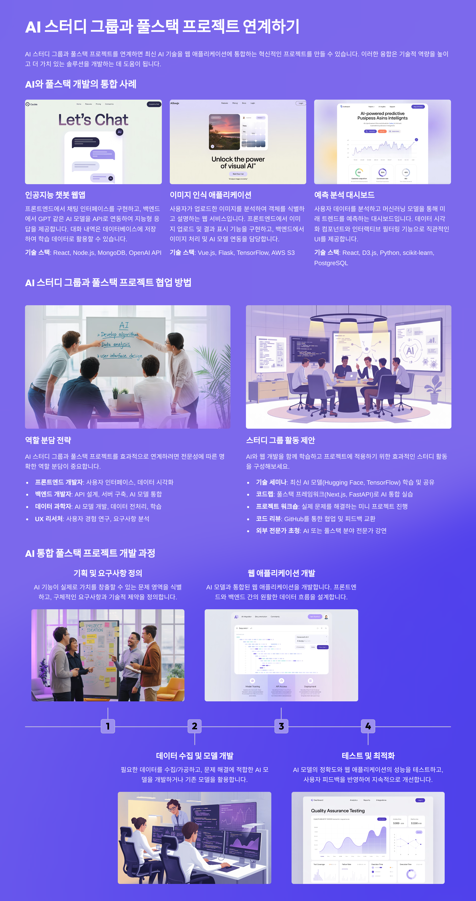
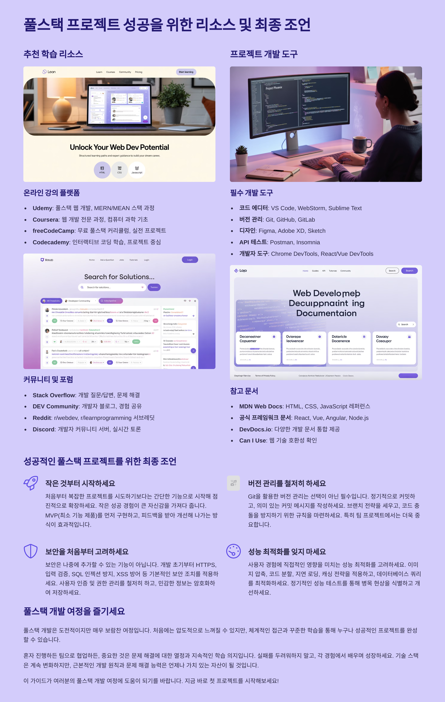

풀스택 개발 [프론트엔드와 백엔드를 아우르는 완전한 개발]
풀스택 개발은 웹 애플리케이션의 프론트엔드(사용자 인터페이스)와 백엔드(서버 및 데이터베이스) 모든 영역을 다루는 개발 방식입니다. 풀스택 개발자는 사용자가 보고 상호작용하는 화면부터 데이터 처리와 저장을 담당하는 서버까지 전체 시스템을 이해하고 구축할 수 있습니다.
현대의 웹 개발에서 풀스택 접근법은 특히 스타트업이나 중소규모 프로젝트에서 매우 중요한 역할을 합니다. 한 명의 개발자가 전체 시스템을 이해하고 개발할 수 있다는 것은 개발 효율성과 유지보수 측면에서 큰 장점을 제공합니다.
풀스택 개발자의 역할
풀스택 개발자는 다음과 같은 다양한 역할을 수행합니다:
- UI/UX 설계 및 구현: 사용자 경험을 고려한 직관적인 인터페이스 개발
- API 설계 및 개발: 프론트엔드와 백엔드 간의 데이터 통신 구조 설계
- 데이터베이스 설계: 효율적인 데이터 저장 및 관리 시스템 구축
- 서버 관리 및 배포: 애플리케이션의 안정적인 서비스 운영
- 성능 최적화: 전체 시스템의 성능 모니터링 및 개선
- 보안 관리: 전 영역에 걸친 보안 취약점 점검 및 대응
풀스택 개발 기술 스택
풀스택 개발에서 사용되는 주요 기술 스택들은 다음과 같습니다:
인기 있는 풀스택 조합
- MEAN Stack: MongoDB, Express.js, Angular, Node.js
- MERN Stack: MongoDB, Express.js, React, Node.js
- LAMP Stack: Linux, Apache, MySQL, PHP
- Django + React: Python Django 백엔드 + React 프론트엔드
- Next.js Full Stack: React 기반 풀스택 프레임워크
각 스택은 프로젝트의 성격, 팀의 경험, 성능 요구사항에 따라 선택됩니다. 중요한 것은 하나의 스택을 깊이 있게 학습한 후, 필요에 따라 다른 기술들을 점진적으로 익혀나가는 것입니다.
프론트엔드 기술
프론트엔드는 사용자가 직접 보고 상호작용하는 부분을 담당합니다:
핵심 기술
- HTML5: 웹 페이지의 구조와 콘텐츠 정의
- CSS3: 스타일링, 레이아웃, 애니메이션
- JavaScript (ES6+): 동적 기능과 사용자 인터랙션
주요 프레임워크/라이브러리
- React: 컴포넌트 기반 UI 라이브러리
- Vue.js: 점진적 채택이 가능한 프레임워크
- Angular: 대규모 애플리케이션을 위한 완전한 프레임워크
- Svelte: 컴파일 타임 최적화에 특화된 프레임워크
도구 및 기술
- 반응형 디자인: 다양한 디바이스 지원
- 웹팩/Vite: 모듈 번들링 및 빌드 도구
- TypeScript: 타입 안전성을 위한 JavaScript 확장
백엔드 기술
백엔드는 서버, 데이터베이스, API 등 시스템의 핵심 로직을 담당합니다:
프로그래밍 언어
- Node.js: JavaScript 기반 서버 환경
- Python: Django, Flask 등의 웹 프레임워크
- Java: Spring Framework 생태계
- C#: .NET Core/5+ 플랫폼
- Go: 고성능 마이크로서비스
- PHP: Laravel, Symfony 프레임워크
주요 개념
- RESTful API: 표준화된 웹 서비스 인터페이스
- GraphQL: 효율적인 데이터 쿼리 언어
- 마이크로서비스: 서비스 분리 아키텍처
- 인증/인가: JWT, OAuth, 세션 관리
- 캐싱: Redis, Memcached를 통한 성능 최적화
데이터베이스 및 배포
데이터베이스
- 관계형 DB: MySQL, PostgreSQL, SQLite
- NoSQL DB: MongoDB, Firebase, DynamoDB
- 인메모리 DB: Redis (캐싱 및 세션 저장)
- 검색 엔진: Elasticsearch (로그 분석, 검색)
배포 및 인프라
- 클라우드 플랫폼: AWS, Google Cloud, Azure
- 컨테이너화: Docker, Kubernetes
- CI/CD: GitHub Actions, Jenkins, GitLab CI
- 서버리스: AWS Lambda, Vercel Functions
- CDN: CloudFlare, AWS CloudFront
모니터링 및 로깅
- 로그 관리: Winston, Morgan (Node.js)
- 성능 모니터링: New Relic, DataDog
- 에러 추적: Sentry, Bugsnag
풀스택 개발의 장점과 단점
장점
- 개발 효율성: 전체 시스템을 이해하여 빠른 의사결정 가능
- 비용 효율성: 한 명이 여러 역할을 수행하여 인력 비용 절감
- 원활한 소통: 프론트엔드-백엔드 간 소통 오류 최소화
- 유연한 대응: 요구사항 변경에 빠른 적응 가능
- 학습 시너지: 전체 시스템 이해로 더 나은 아키텍처 설계
단점
- 학습 부담: 광범위한 기술 스택 학습 필요
- 전문성 한계: 모든 영역에서 전문가 수준 달성 어려움
- 기술 뒤처짐: 빠르게 변화하는 모든 기술 따라가기 어려움
- 복잡성 증가: 대규모 프로젝트에서는 전문화된 역할 분담이 더 효율적
- 번아웃 위험: 많은 책임과 광범위한 업무로 인한 스트레스
풀스택 개발자가 되는 방법
단계별 학습 로드맵
- 기초 다지기 (1-3개월)
- HTML, CSS, JavaScript 기본기 탄탄히
- Git/GitHub 버전 관리 익히기
- 기본적인 알고리즘 및 자료구조 학습
- 프론트엔드 심화 (2-4개월)
- React 또는 Vue.js 프레임워크 마스터
- 상태 관리 라이브러리 (Redux, Vuex)
- 반응형 디자인 및 CSS 전처리기
- 백엔드 입문 (3-5개월)
- Node.js + Express 또는 Python + Django
- 데이터베이스 기초 (SQL/NoSQL)
- RESTful API 설계 및 구현
- 통합 및 배포 (2-3개월)
- 프론트엔드-백엔드 연동
- 클라우드 서비스 활용 (AWS, Heroku)
- CI/CD 파이프라인 구축
실무 경험 쌓기
- 개인 프로젝트: 포트폴리오용 완성도 높은 프로젝트 개발
- 오픈소스 기여: GitHub의 오픈소스 프로젝트 참여
- 팀 프로젝트: 협업 경험 및 코드 리뷰 경험
- 사이드 프로젝트: 실제 사용자가 있는 서비스 개발
풀스택 개발의 미래와 전망
기술 트렌드
- JAMstack: JavaScript, APIs, Markup 기반 모던 웹 아키텍처
- 서버리스 컴퓨팅: 인프라 관리 부담 줄이고 개발에 집중
- 마이크로 프론트엔드: 프론트엔드 영역의 마이크로서비스화
- AI/ML 통합: 지능형 기능을 갖춘 풀스택 애플리케이션
- Web3 기술: 블록체인, 탈중앙화 애플리케이션 개발
시장 전망
- 수요 증가: 스타트업과 중소기업에서 풀스택 개발자 선호
- 원격 근무: 글로벌 원격 개발팀에서 풀스택 역량 중요
- 프리랜싱: 독립적인 개발자로 다양한 프로젝트 참여
- 창업 기회: 기술적 제약 없이 아이디어를 실현할 수 있는 능력
필요한 역량
- 지속적 학습: 빠르게 변화하는 기술 환경 적응
- 문제 해결: 전체 시스템 관점에서의 이슈 진단 및 해결
- 커뮤니케이션: 기술적 내용을 비개발자에게 설명하는 능력
- 비즈니스 이해: 기술적 결정이 비즈니스에 미치는 영향 파악
풀스택 개발의 미래는 밝습니다. 기술의 복잡성이 증가하는 만큼, 전체를 아우를 수 있는 개발자의 가치는 더욱 높아질 것입니다.